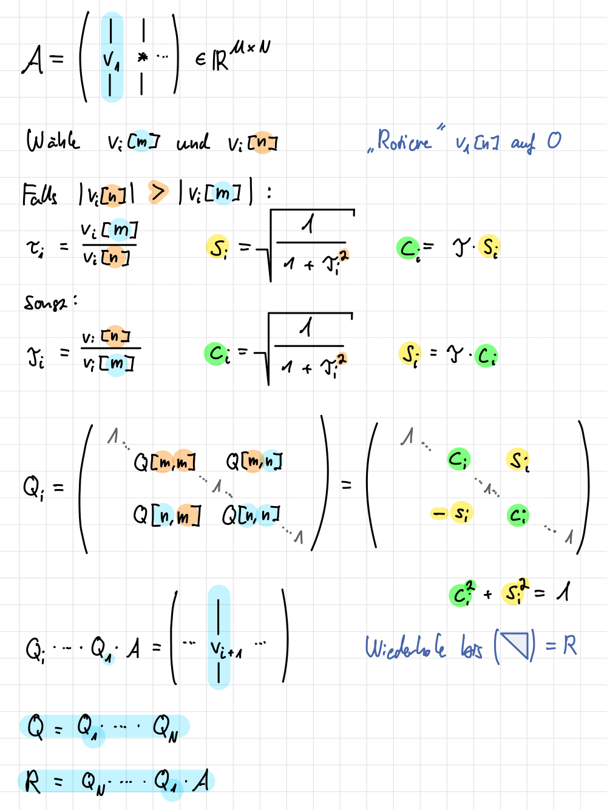

def forward_sub(lower, rhs):
n = lower.shape[0]
solution = np.zeros(n)
for i in range(n):
solution[i] = rhs[i]
for j in range(i):
solution[i] -= lower[i, j] * solution[j]
solution[i] = solution[i] / lower[i, i]
return solution2 Direkte Lösungsverfahren für lineare Gleichungen
2.1 Vorwärts-Substitution
\[ L = \begin{pmatrix} 1 \\ l_{21} & 1 \\ l_{31} & l_{32} & 1 \\ \vdots & \vdots & \vdots & \ddots \\ l_{n1} & l_{n2} & l_{n3} & \dots & 1 \\ \end{pmatrix} \]
Die Vorwärts-Substitution löst \(L\cdot\mathbf{y}=\mathbf{b}\) (normierte untere Dreiecksmatrix), indem wir über die Zeilen iterieren und dabei die Lösungen der vorheringen \(\mathbf{x}_j\) für die Berechung des aktuellen \(\mathbf{x}_i\) verwenden (\(\mathbf{x}_1 = \mathbf{b}_1\)).
Die Laufzeit liegt somit in \(O(n^2)\).
forward_sub(np.array([
[1, 0, 0],
[2, 1, 0],
[3, 4, 1]]
), np.array([1, 2, 3]))array([1., 0., 0.])2.2 Rückwärts-Substitution
\[ R = \begin{pmatrix} r_{11} & r_{12} & r_{13} & \dots & r_{1n} \\ & r_{22} & r_{23} & \dots & r_{2n} \\ & & r_{33} & \dots & r_{3n} \\ & & & \ddots & \vdots \\ & & & & r_{nn} \end{pmatrix} \]
Die Rückwärts-Substitution löst \(R \cdot \mathbf{x}=\mathbf{y}\), indem wir von der letzten Zeile aus das verfahren der Vorwärts-Substitution anwenden.
Die Laufzeit liegt somit ebenfalls in \(O(n^2)\).
def backward_sub(upper, rhs):
n = upper.shape[0]
solution = np.zeros(n)
for i in range(n - 1, -1, -1):
tmp = rhs[i]
for j in range(i + 1, n):
tmp -= upper[i, j] * solution[j]
solution[i] = tmp / upper[i, i]
return solutionbackward_sub(np.array([
[2, 2, 3],
[0, 1, 4],
[0, 0, 1]]
), np.array([1, 0, 0]))array([0.5, 0. , 0. ])2.3 LR-Zerlegung
(en. LU-Decomposition)
Warnung
Die \(1\)-en auf der Diagonalen der \(L\)-Matrix bleiben beim Zeilentauschen unverändert
Die \(LR\)-Zerlegung lässt sich mittels des Gauß-Algorithmus bestimmen, indem wir \(A\) auf eine untere Dreiecksmatrix \(R\) gaußen und uns die Operationen in \(L\) “merken”. Sie ist eindeutig und benötigt \(O(n^3)\) Operationen.
Darauf lässt sich die Lösung mittels Vorwärtssubsitution von \(L\cdot\mathbf{y}=\mathbf{b}\) (oder \(L\cdot\mathbf{y}=P \cdot \mathbf{b}\) mit \(P\) als Permutationsmatrix) und Rückwärtssubstitution von \(R\cdot\mathbf{x}=\mathbf{y}\) aufbauen.
Die Berechnung ist nicht stabil.
Hinreichende Bedingungen für die Exsistenz einer \(LR\)-Zerlegung für eine quadratische Matrix \(A\):
- strikt diagonal-dominant, daher das Diagonalelement ist größer als die Summe aller anderen Elemente in der Zeile, bzw.
\[ |A[n, n]|>\sum_{\substack{k=1 \\ k \neq n}}^N|A[n, k]| \quad \text { für } n=1, \ldots, N \]
- positiv definit, daher alle Eigenwerte \(> 0\), bzw.
\[ x^{\top} A x>0 \quad \text { für alle } x \in \mathbb{R}^N, x \neq 0 . \]
Hinweis
Falls diese Bedingungen nicht gegeben sind, können wir mittels Zeilenvertauschung (Permutationsmatrix \(P\)) eine LR-zerlegbare Matrix \(PA\) in \(O(n^3)\) erzeugen.
def lu_decomposition(matrix):
n = matrix.shape[0]
lower = np.zeros(shape=matrix.shape)
upper = np.zeros(shape=matrix.shape)
for j in range(n):
lower[j][j] = 1.0
for i in range(j + 1):
first_sum = sum(upper[k][j] * lower[i][k] for k in range(i))
upper[i][j] = matrix[i][j] - first_sum
for i in range(j, n):
second_sum = sum(upper[k][j] * lower[i][k] for k in range(j))
lower[i][j] = (matrix[i][j] - second_sum) / upper[j][j]
return lower, upper
def solve_with_lu(matrix, rhs):
lower, upper = lu_decomposition(matrix)
y = forward_sub(lower, rhs)
return backward_sub(upper, y)matrix = np.array([[2.0, 1.0],
[1.0, 4.0]])
rhs = np.array([1.0, 2.0])
solution = solve_with_lu(matrix, rhs)
print("solution", solution)
test = rhs - np.dot(matrix, solution)
print("test ",test)solution [0.5 0. ]
test [0. 1.5]2.4 Cholesky-Zerlegung
(2.7) Satz
Sei \(A \in \mathbb{R}^{N \times N}\) symmetrisch und positiv definit. Dann existiert genau eine Cholesky-Zerlegung \(A=L L^{\top}\) mit einer regulären unteren Dreiecksmatrix \(L\).
Es handelt sich somit um eine Spezialisierung der LR-Zerlegung für symmetrisch, positiv definite Matrizen.
\[\begin{align} A &= \begin{pmatrix} a_{11} & a_{21} & a_{31}\\ a_{21} & a_{22} & a_{32}\\ a_{31} & a_{32} & a_{33}\\ \end{pmatrix}\\ & = \begin{pmatrix} l_{11} & 0 & 0 \\ l_{21} & l_{22} & 0 \\ l_{31} & l_{32} & l_{33}\\ \end{pmatrix} \begin{pmatrix} l_{11} & l_{21} & l_{31} \\ 0 & l_{22} & l_{32} \\ 0 & 0 & l_{33} \end{pmatrix} \equiv L L^T \\ &= \begin{pmatrix} l_{11}^2 & l_{21}l_{11} & l_{31}l_{11} \\ l_{21}l_{11} & l_{21}^2 + l_{22}^2& l_{31}l_{21}+l_{32}l_{22} \\ l_{31}l_{11} & l_{31}l_{21}+l_{32}l_{22} & l_{31}^2 + l_{32}^2+l_{33}^2 \end{pmatrix}\end{align}\]
2.4.1 Berechnung
Diagonalelemente:
\[l_{kk} = \sqrt{a_{kk} - \sum_{{\color{teal}j}=1}^{k-1} l_{k{\color{teal}j}}^2}\]
Rest:
\[l_{{\color{orange}i}k} = \frac{1}{l_{kk}} \left ( a_{ik} - \sum_{{\color{teal}j}=1}^{k-1} l_{{\color{orange}i}{\color{teal}j}}l_{k{\color{teal}j}} \right )\]
def cholesky_decomposition(A):
n = matrix.shape[0]
lower = np.zeros(matrix.shape)
lower[0, 0] = np.sqrt(matrix[0, 0])
for n in range(1, n):
y = forward_sub(lower[:n, :n], matrix[n, :n]) # linalg.solve_triangular(lower[:n, :n], matrix[n, :n], lower=True)
lower[n, :n] = y
lower[n, n] = np.sqrt(matrix[n, n] - np.dot(y, y))
return lower
def solve_with_cholesky(matrix, rhs):
lower = cholesky_decomposition(matrix)
y = forward_sub(lower, rhs)
return backward_sub(lower.transpose(), y)matrix = np.array([[2.0, 1.0],
[1.0, 4.0]])
rhs = np.array([1.0, 2.0])
rhs = np.array([1.0, 2.0])
solution = solve_with_cholesky(matrix, rhs)
print("solution",solution)
test = rhs - np.dot(matrix, solution)
print("test ",test)solution [0.70710678 0. ]
test [-0.41421356 1.29289322]- Die Cholesky-Zerlegung ist stabil: Es gilt \(\kappa_2(L)^2=\kappa(A)\)
- Die Berechnung der Cholesky-Zerlegung benötigt nur halbsoviele Operationen wie die Berechnung einer LR-Zerlegung.
- Matrizen mit einer geeigneten Hüllenstruktur (viele Nullelemente wie bei der Bandmatrix) können effizienter gelöst werden (Bandmatrix in \(O(NM^2)\))
2.5 QR-Zerlegung
(2.14) Satz (QR-Zerlegung)
Zu \(A \in \mathbb{R}^{M \times N}\) existiert eine \(Q R\)-Zerlegung \(A=Q R\) in eine orthogonale Matrix \(Q \in \mathbb{R}^{M \times M}\) mit \(Q^{\top} Q=I_M\) und eine obere Dreiecksmatrix \(R \in \mathbb{R}^{M \times N}\) mit \(R[m, n]=0\) für \(m>n\).
- Das LGS \(Ax = b\) kann durch die Berechnung \(y = Q^\top b\) und darauf mit Rücksubstitution \(Rx = y\) gelöst werden.
- Asymptotischer Aufwand in \(O(N^3)\)
Rotationen und Drehungen sind orthogonale Matrizen \(Q \in \mathbb{R}^{N \times N}\) mit
- \(Q Q^{\top}=I_N, \ Q^{\top} Q=I_N\), so dass \(Q^{-1}=Q^{\top}\),
- \(|Q v|_2=|v|_2\) und \((Q v)^{\top}(Q w)=v^{\top} w\) Längen und Winkel erhaltend,
- \(\kappa_2(Q)=1\).
2.5.1 Householder Transformationen
Wir erhalten \(N\) orthogonale Vektoren für \(A\), indem wir den ersten Spaltenvektor \(v_1\) mittels einer Householder Transformation (Spiegelung) \(Q_1\) auf die \(x\)-Achse (\(e_1\)) abbilden und dies sukzessiv für die nächsten Spaltenvektoren \(v_i\) aus \(Q_1 \cdot \dots \cdot Q_{i-1} \cdot A\) wiederholen (dabei vernachlässigen wir die ersten \(i\) Zeilen, da wir nur einen Untervektorraum in \(\mathbb{R}^{N-i}\) betrachten).
2.5.2 Givens-Rotation
Alternativ können wir Givens-Rotationen verwenden, um die Matrix \(A\) in eine obere Dreiecksmatrix zu überführen. Eine Givens-Rotation ist eine orthogonale Matrix \(Q \in \mathbb{R}^{N \times N}\), die die \(m\)-te und \(n\)-te Zeile von \(A\) rotiert, um die Elemente unterhalb der Hauptdiagonalen zu eliminieren.

Besonders bei dünnbesetzten Matrizen (sparse) ist die Givens-Rotation effizient.